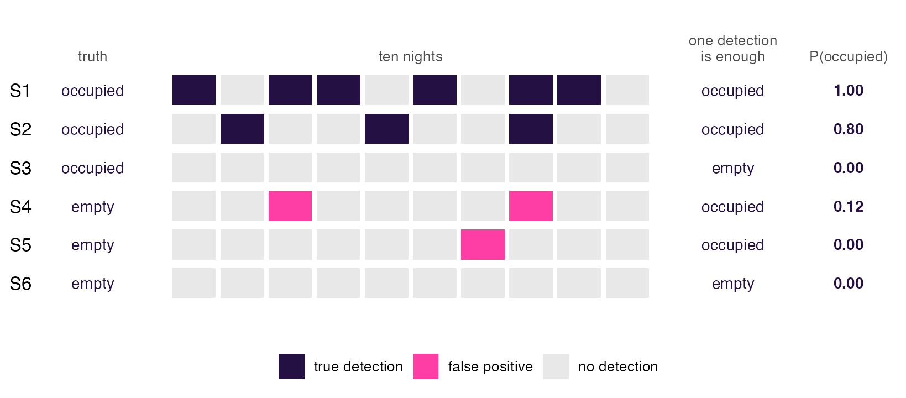
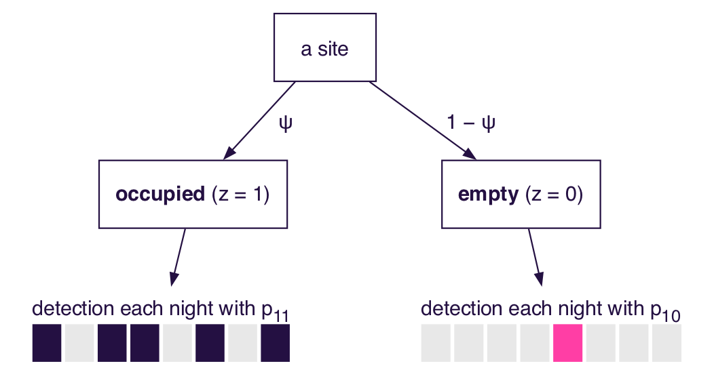
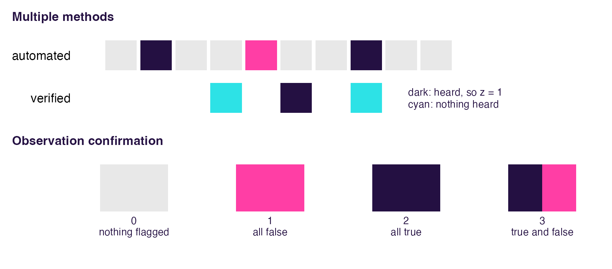
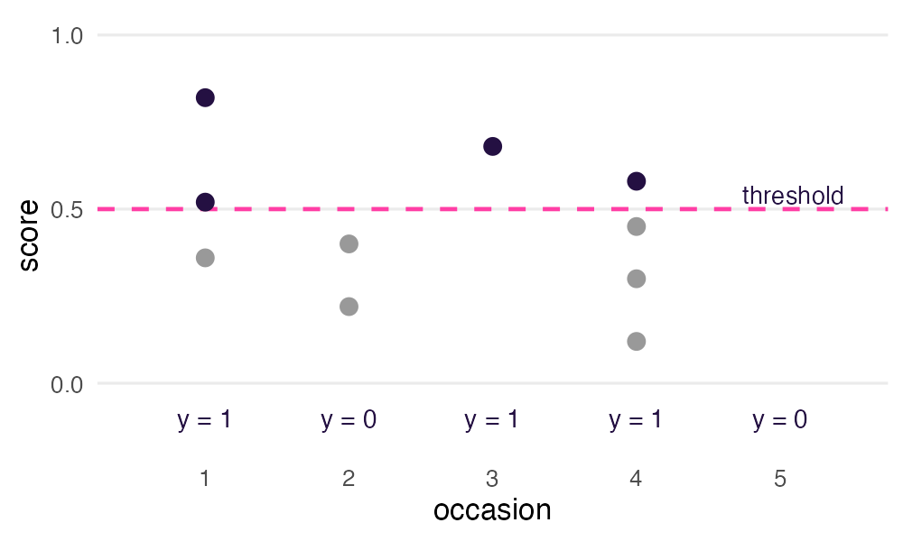
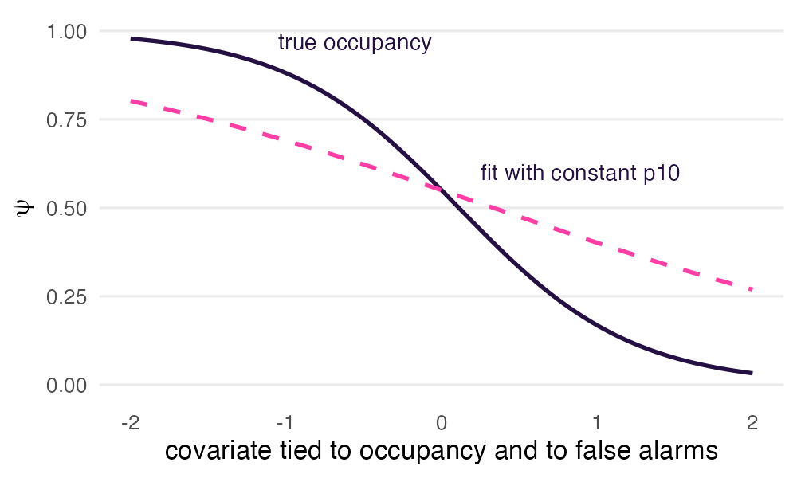
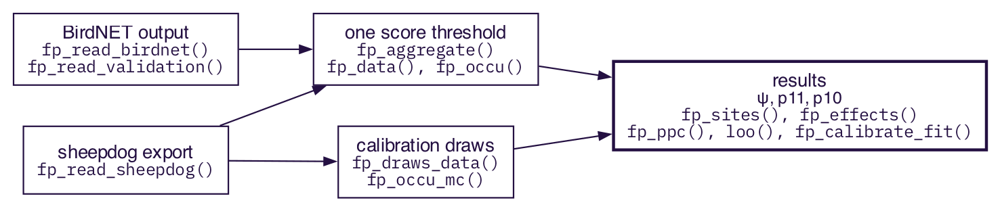

Illustrating how crywolf works
Source:vignettes/articles/how-crywolf-works.Rmd
how-crywolf-works.RmdThis article explains, with drawings and without equations, what
crywolf does and why. The model, its priors and the code are in
vignette("crywolf"); the terms used here are defined in the
glossary at the end.
The problem
An automated detector, such as an acoustic classifier, makes two kinds of mistakes. It misses the species on some occasions (false negatives), and it sometimes reports the species where it is absent (false positives): it cries wolf.

Ordinary occupancy models deal with misses by repeating the survey, but they read every detection as real. Counting a site as occupied after one detection turns empty sites with a false alarm into occupied ones (S4, S5), which inflates occupancy and can distort the effect of covariates. crywolf lets detections be false and gives each site a probability of being occupied instead (right column).
The model: two stories for every site

Whether a site is occupied (z) is never observed. The model considers both stories for every site:
- occupied (probability ψ): each occasion gives a detection with the true-detection rate p11;
- empty (probability 1 − ψ): each occasion gives a detection with the false-positive rate p10, the rate at which the detector cries wolf.
p11 is constrained to be larger than p10 at an average site (the gap Δ), so the two stories cannot swap labels.
How the model tells them apart

With repeated occasions, occupied sites are detected often and empty sites only now and then, so the sites form two groups. The model estimates ψ, p11 and p10 as the mixture that fits them best. Where the groups overlap, a site with one to four detections could be a rare caller or a false alarm; the data alone cannot say how many detections are false. That is what the known truth settles (below). This figure uses p11 = 0.25, lower than in the examples of the next section, so that the groups overlap.
How P(occupied) is computed for one site

For a site with n₁ occasions with a detection and n₀ without:
- Occupied = ψ × p11^n₁ × (1 − p11)^n₀
- Empty = (1 − ψ) × p10^n₁ × (1 − p10)^n₀
- P(occupied) = Occupied ÷ (Occupied + Empty)
This is Bayes’ rule: the two stories are the only possibilities, so
their shares add up to one. In a fit, ψ, p11 and p10 are not known;
crywolf estimates them from all the sites and the known truth, repeats
the calculation for every posterior draw and averages
(fp_sites()). A site with a verified or confirmed true
detection has P(occupied) = 1.
It needs some known truth

Without verified or confirmed data, the false-positive rate rests
only on the priors and the gap, and fp_occu() warns about
it. Two designs provide them, and they can be combined:
| Multiple methods (Miller et al. 2011) | Observation confirmation (Chambert et al. 2015) | |
|---|---|---|
| what the expert observes | whether a second method detects the species, on occasions of its own, chosen independently of the classifier | whether each flag on random flagged occasions is true or false |
| recovers best | p11: sites with a verified detection are known to be occupied, so their automated record shows p11 | p10: false flags are seen directly |
| recovers less directly | p10: through sites where the verified surveys found nothing, which are not proven empty | p11: misses are never checked |
| anchors | ψ, the state: a heard call fixes z = 1 independently of the classifier | the error rate at the threshold; confirmed true flags also fix z = 1 |
| guards against bias from | detection that varies with the environment | false positives that vary with the environment (with
fp = ~ covariates) |
| blind to | false alarms at occupied sites, which p11 absorbs | sites or nights where the classifier never fires |
| depends on the threshold? | no | yes: redo it if the threshold changes |
| key assumptions | the expert never reports a false positive; both methods see the same state | occasions are chosen at random, not for their scores; every observation of a checked occasion is checked |
| cost | high: each verified occasion is a full survey by an expert | low: every check is a classifier decision |
| in crywolf | fp_data(verified = ) |
fp_aggregate(validation = ),
fp_data(confirmed = )
|
In short, multiple methods anchors the truth about sites and protects against biased detection, and it reaches p10 only through those sites. Observation confirmation anchors the classifier’s error rate cheaply but trusts the classifier’s silence. Clips picked for their high scores contain fewer false positives than a random sample and would understate p10, so draw the checked occasions at random.
A verified detection is certain, but a verified occasion without a detection does not prove absence, because the verified method has its own detection probability.
With confirmed occasions, false observations can also occur at
occupied sites, so the two stories above change. det and
fp then model the probabilities of at least one true and at
least one false observation on an occasion, and p11 combines the two
(?fp_occu). The two stories and the formulas above describe
the multiple-methods design.
An occasion in both verified and the confirmed rows of
auto enters the likelihood twice. That is correct only for
two independent reviews, not for one verdict copied to both tables, and
fp_data() warns about it.
Where the threshold enters

fp_aggregate() turns the classifier’s predictions into
occasions: an occasion is a detection when any of its predictions
reaches the threshold. A lower threshold lets in more true and more
false detections; p10 is estimated at that threshold and absorbs the
extra false ones. For the same reason, the confirmed occasions must be
drawn at the threshold of the analysis.
fp_threshold_sweep() refits the model at several thresholds
to check how much the results depend on it
(vignette("threshold")).
What can change p10

ψ, p11 and p10 each take their own covariates (occ,
det and fp in fp_occu()). When
false positives follow a gradient tied to occupancy, for example a
sound-alike species that is common where the target is rare, a constant
p10 flattens the occupancy slope; letting p10 depend on that gradient
corrects it (vignette("crywolf"), “Modelling the
false-positive rate”).
From detections to results

The predictions and the known truth can come from BirdNET selection
tables and reviewed clips (fp_read_birdnet(),
fp_read_validation();
vignette("birdnet_workflow")) or from an export of the sheepdog package
(fp_read_sheepdog()). With one score threshold, one model
is fitted. With the calibration draws of a Bayesian calibration of the
classifier (fp_draws_data()), one model is fitted per draw
and the posteriors are pooled (fp_occu_mc()), so that the
uncertainty about which detections are true reaches occupancy. Either
way, crywolf estimates p10 from the known truth. On the route of the
draws that means the annotated recordings (verified),
because the reviewed clips are the data of the calibration, so the
observation-confirmation design does not enter it.
Terms
| term | meaning |
|---|---|
| site | the unit whose occupancy is estimated (a recorder location, or a site-night if you define it so) |
| occasion | one survey of a site: a recording, a minute or a night |
| y | the record of one occasion: 1 if the detector flagged the species, 0 if not |
| z | the true, hidden state of a site: 1 occupied, 0 empty |
| ψ (psi) | occupancy probability: the chance that a site is occupied
(occ = ~ x) |
| p11 | true-detection rate: the chance that an occasion at an occupied site
gives y = 1 (det = ~ …) |
| p10 | false-positive rate: the chance that an occasion at an empty site
gives y = 1 (fp = ~ …) |
| Δ (gap) | the constraint p11 > p10 at an average site, so that the two states cannot swap labels |
| false positive | a detection at a site where the species is absent; with confirmed occasions, also a false observation at an occupied site |
| known truth | what an expert established: verified recordings and confirmed detections; only a detection is certain |
| verified | multiple-methods design: occasions surveyed by an expert by a method that cannot produce false positives |
| confirmed | observation-confirmation design: flagged occasions whose detections an expert checked as true or false (states 0–3) |
| threshold | the score at or above which a prediction counts as a detection
(fp_aggregate()) |
| P(tp) | the probability that one detection is true, from a calibration of the classifier’s score (e.g. by sheepdog) |
| P(occupied) | the probability that one site is occupied, given its occasions and
the fitted ψ, p11 and p10 (fp_sites()) |
| posterior draw | one plausible set of parameter values from a Bayesian fit |
| calibration draws | versions of the detections, one per posterior draw of a calibration
(fp_draws_data()) |
| sd_within, sd_between | spread of a result within one fit, and between fits to different calibration draws |
| cut model | the occupancy fit uses the calibration but does not update it |
Values in the drawings are illustrative.
References
Chambert, T., Miller, D. A. W., & Nichols, J. D. (2015). Modeling false positive detections in species occurrence data under different study designs. Ecology, 96, 332–339. https://doi.org/10.1890/14-1507.1
Miller, D. A., Nichols, J. D., McClintock, B. T., Grant, E. H. C., Bailey, L. L., & Weir, L. A. (2011). Improving occupancy estimation when two types of observational error occur: non-detection and species misidentification. Ecology, 92, 1422–1428. https://doi.org/10.1890/10-1396.1